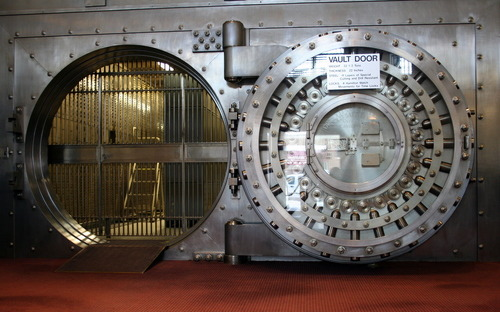

08-1-2012 9:03AM (ET)

Jeremy Spilman has an excellent post (in two parts: part 1 and part 2) on ways to increase the security of the storing password hashes. Please read his full post for details as this post will be about the general idea and it's further implications. I will be examining his scheme and developing related schemes that use 'Security Through Obesity' in this post. This entry is a rough sketch of some of the ideas that the Spillman scheme inspired.
'Security Through Obesity' Is the notion that you artificially increase the size of information you wish to protect to make it hard for an attacker to steal and hard for an attacker to store. Such a strategy has an analogue in the physical world. It is very common for safes or other protected objects to be made really heavy and awkward so someone can't just walk away with it.
tl;dr Digital objects are very easy to secretly replicate and distribute unless they are very very large.
The secure storage of password hashes is extremely important but sadly the technologies used and best practices have not evolved substantially since before 1978. Sure everyone uses salts (or atleast regrets not using salts), but salts project against only a very narrow risk and one which is generally not relevant due to the ascendancy of GPU brute force attacks5.
All of the password hash best practices are focused on making the hashes hard for an attacker to break but they ignore the equally important aims of preventing an attacker from accessing the hashes in the first place and detecting that an attacker has gained access. Detection is important because if users can change their passwords fast enough after a compromise the stolen hashes are of little value.
In Spilmans post he suggests creating two tables: a user table (consisting of the username and the salt) and a hash table (consisting of password hashes)2 with no direct connection between the two tables.
Since the only relationship between the user table and the hash table is the password (which is unknown) an attacker has no way of telling if a particular hash matches to a particular user without guessing a password. In fact an attacker has no way of telling if a hash is used by any user at all except through process of elimination. Therefore if we generate a large numbers of fake hashes and storing them in the hash table, the attacker at compromise time is unable to tell the real hashes from the fakes therefore must download all the hashes. Since the hash table which the attacker must download to break the hashes can be made arbitrary big, downloading these hashes presents a serious bandwidth and storage problem to an attacker.
This has the following benefits (for the sake of example lets assume that the hash table has been expanded to 1 TB by adding fake hashes):
Slow Down the Attack: Downloading 1 TB of data from a server at 50 Mbit/s ( using a T3 ) takes roughly 44 hours and likely much much longer.
Make the Attack Louder: This bandwidth spike will likely be noticed and shut down before an attacker has completed the download. Thereby denying the attacker all the password hashes and also detecting the compromise so that users can be alerted to change their passwords. Additionally an alert could be placed on the bandwidth the database uses so that if it spikes a warning is triggered (even if it isn't an attacker downloading all the hashes, it probably a good idea to be alerted when a db starts using 100x it's normal bandwidth).
Force a Direct Connection: An attacker can't get download speeds approaching 50 Mbit/s using Tor or proxy networks. Therefore an attacker must either use a compromised host with lots of bandwidth or connect directly. Both of these options are sub-optimal for an attacker since they open up the possibility that the attacker will lose control a very valuable compromised host or that the attackers ip address will be exposed.
Increase Resource Costs: An attacker must have a location to store all of this data. Moving this data or publishing it online for others to crack becomes extremely expensive (you can't post 1 TB files to paste bin).
Traffic Pattern Analysis: A 50MBit/s download for 44 hours creates a easy to detect pattern over network links. If an attack is detected early enough the download can be traced to it's destination by traffic analysis even across multiple proxies or hops in a botnet.
Having a hash table (as in the 'Security Through Obesity' scheme) filled with fake hashes suggests an additional security measure, setting a trap. We have values in the hash table that we know only an attacker would request, thus we have a means to distinguish the behavior of a success attack from benign actions3.
Web Application Traps: Add code to your templates such that they always check for certain hash values when being rendered. If these values are found send an alert and refuse to render the page.
Network Traps: Setup your firewall to look for a few of the fake hash values (enough to catch a download early), send an alert if these values are being sent over your network.
Google Traps: Create google alerts and other automated systems to alert you if certain hash values ever show up on google or paste bin.
Account Traps Why stop at fake hash values. Create realistic looking usernames and hash values (with easily guessed passwords), so that if an attacker logs in with one of these trap accounts you will know that the hash table has been compromised4.
So far this entry has focused on secure password hash storage using 'Security Through Obesity' but by no means is that the only area that can be improved by this technique. In this section we will show how to use 'Security Through Obesity' to protect encrypted files by building systems of increasing sophistication. My aim here is not to develop a ready made solution but to explore the ways in which download bandwidth and harddrive limitations can be a contraint on attackers.
The Trivial System: Consider the most trivial way to do this. Take a plaintext file, mix in 1 TB of random data by alternating between bits of the plaintext with the ciphertext ( plaintext bit between every n bits of random noise), and then encrypt using CBC this mix.
$$ \text{mix}( P, R ) \rightarrow P_0 | R_{0..n} | P_{1} | R_{(n+1)..2n} | ... $$
$$ \text{EncryptCBC}( k, \text{mix}( \text{file},\text{1TB random data} ) ) $$
Lets look at two situations: the attacker has access to the encrypted file but not the key and the attacker has access to the key and the encrypted file. In the first case this scheme will slow down the attackers ability to download the file and provide a defender the other benefits of Security Through Obesity (high chance of detection, etc...). Unfortunately in the second case the attacker can just decrypt the file and exfiltrate the much smaller file. This isn't extremely useful since the real threat is the attacker learning the plaintext, but this only slows down an attacker if she doesn't have the key. Furthermore since we are using CBC mode an attacker could download two contiguous blocks of the ciphertext and later if they learn the key they could encrypt the bit in the last block. This is a very bad quality since it allows the attacker to avoid some of large size protections here and learn something about the plaintext.
A Slightly Better System: Use secret sharing to expand the data into $n$ shares that total to 1TB then random permute the order and bits of these shares and add a table of contents such that the table of contents, $tc$ can reconstruct the original shares. Encrypt the whole mess with CBC.
$$ \text{shares} = text{secret_share_expander}( \text{plaintext} )$$ $$ \text{tc}, \text{shuffled_shares} = \text{permute}( \text{shares} )$$
The object here it to prevent an attacker from learning anything about the plaintext without downloading and decrypting a significant subset of the encrypted file. Of course as before if the attacker has access to key and the encrypted file on the server, she can extract the small plaintext and download that.
Adding a Workfactor: The problem we arrive at is that if an attacker has access to both the encrypted file and the key then 'Security Through Obesity' adds no security benefit. One solution is to add a workfactor so that decrypting the file becomes a serious bottleneck to an attacker. Consider an decryption algorithm that takes 100 hours to run on the hardware that the data resides on. Note that this solves one of the typical problems with Time-Release Cryptography in that the attacker is either forced to copy the file to a more powerful machine or an attacker is forced to perform the decryption on a machine of our choosing, in either case we can lower bound the time before the attacker can decrypt the message( $\text{min}( \text{time_to_download}, \text{time_to_decrypt} )$ ).
Use Cases: While in most situations this is hardly ideal since fast decryption is a requirement, I can think of many situations in which a file is of such secrecy that a 100 hour wait would be acceptable.
Consider someone is physically transporting a small collection of very secret data (missile codes, ssh keys, zero-days). The best course of action would be to first encrypt this secret data and send the key by a secure channel (public key crypto over the internet springs to mind). The problem this 'Security Through Obesity' solves in this circumstance is that if someone covertly steals the data from you they will not have time to make a copy before you notice that it is gone. If they manage to capture both the key and the encrypted data they will not be able to quickly decrypt the data giving you time to react and take preventative measures (change the codes). Furthermore these measures prevent attackers from quickly transmitting this data allowing the defender time to either recapture it or at least slowing down the attackers ability to use it for their advantage.
'Security Through Obesity' does not provide the type of hard and sometimes brittle security that typifies most security measures. What it provides is the ability of defenders to apply a frictional cost on an attacker. While this sort of thinking is standard in physical security (big heavy things harder to steal) it is often over looked in information security which is a shame since it allows much needed and different quality of security.
Alex_w on reddit came up with the term Security Through Obesity in a reddit thread in response to the Spilman post and I think it encapsulates this sort of idea perfectly (Spilman seems to agree since he edited his post to add the phrase). ↩
Spilman's scheme is a little more complicated than I have written here since he wishes to avoid the possibility that an attacker with access to another users salt and the ability to insert arbitrary values into the hash table could craft another hash which matched the users salt ( salt|password1, salt|password2). These details are not relevant to our discussion, but his solution is neat and you should read it. ↩
There is almost no chance of false positives because the probability of random data colliding with hash values (assuming you are using 512 bit values) is much lower than the probability of an asteroid destroying your data center. ↩
In fact it is an excellent idea to create a few fake user accounts with real email addresses and no guessable password. Attackers will sometimes sell email addresses to spammers. If these accounts start getting emails you learn that an attacker has compromised this information. Same idea works by putting hardcoded ssh keys in your code. If anyone uses these keys they attempt to connect to a server an email alert is sent out. ↩
Reddit user Solardiz was kind enough to point out that salts protect against a variety of time-memory and precomputation of which rainbow tables is a subset and that while salts do make GPU attacks more difficult (but they are not a sufficient security measure to defend against GPU attacks, one must still use a high workfactor). ↩